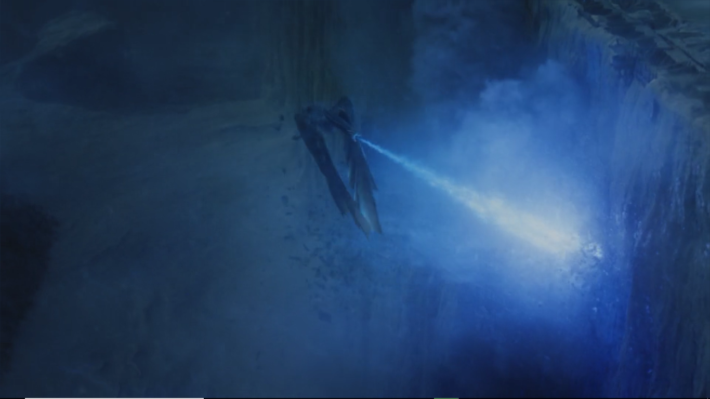

Season seven of Game of Thrones is fast approaching, like an invading armada flanked by huge CGI dragons. Will Daenerys Targaryen (Emilia Clarke) sweep all before her when she and her fire-breathing brood finally – finally ! – set foot / claw on Westeros? Has Cersei Lannister (Lena Headey) truly gone full Mad Queen? Is this the year Jon Snow (Kit Harington) at last cheers up? But even as hardcore GoT fans look forward to the disentangling of these knotty threads, the rest of us may struggle the recall the state of play on the vast chessboard that is the Seven Kingdoms. There is much to keep track of. In the capital of King's Landing, Cersei has deftly outflanked her rivals by eviscerating them in a hellish inferno.

In Winterfell, Jon Snow and half sister Sansa Stark (Sophie Turner) continue their reconquest of the North. On the other side of the Wall, the Night King gathers his forces (actually that aspect of the story at least is straightforward: the Night King is lightly-frosted, unspeakably evil and wants to kill everyone).
With the first episode of the returning series just a few weeks away what better time for a year-by-year break-down of the saucy fantasy caper to rule them all. If you're really pushed for time, here's an even shorter version. A long time ago in a magical fantasy kingdom everybody was half-naked, over-sexed and blood thirsty. And then the ice zombies turned up…
The best Game of Thrones merchandise every fan should own